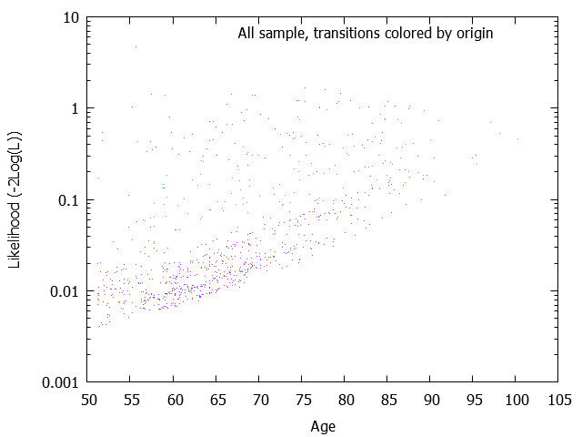
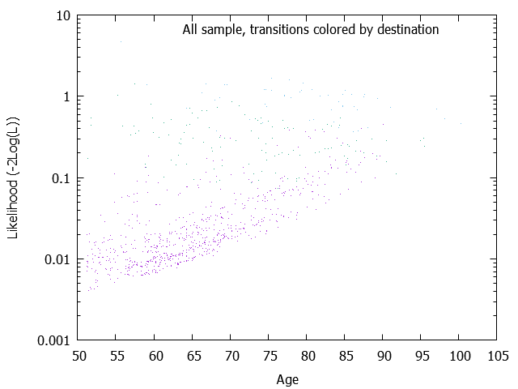
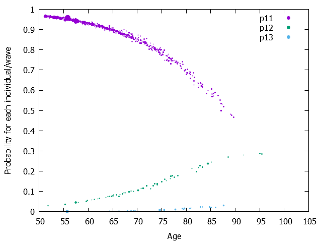
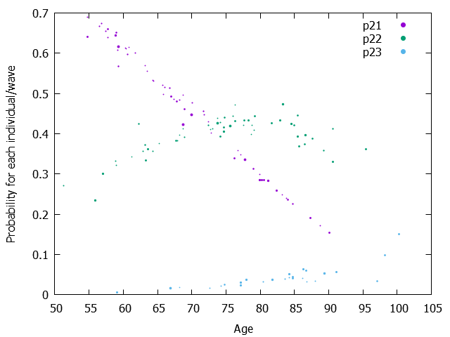

| Model= | 1 | + age |
|---|---|---|
| 12 | -8.8000028 | 0.0699061 |
| 13 | -12.3414882 | 0.0959254 |
| 21 | 0.0470986 | -0.0331591 |
| 23 | -8.4304704 | 0.0672059 |
The Wald test results are output only if the maximimzation of the Likelihood is performed (mle=1) Parameters, Wald tests and Wald-based confidence intervals W is simply the result of the division of the parameter by the square root of covariance of the parameter. And Wald-based confidence intervals plus and minus 1.96 * W It might be better to visualize the covariance matrix. See the page 'Matrix of variance-covariance of one-step probabilities and its graphs'.
| Model= | 1 | + age |
|---|---|---|
| 12 | -8.8000028 ( 1.0387370)W= -8.472[ -10.8359273; -6.7640782] | 0.0699061 ( 0.0142966)W= 4.890[ 0.0418848; 0.0979274] |
| 13 | -12.3414882 ( 2.1026429)W= -5.870[ -16.4626684; -8.2203081] | 0.0959254 ( 0.0284533)W= 3.371[ 0.0401569; 0.1516938] |
| 21 | 0.0470986 ( 1.1744538)W= 0.040[ -2.2548308; 2.3490280] | -0.0331591 ( 0.0163447)W= -2.029[ -0.0651947; -0.0011236] |
| 23 | -8.4304704 ( 1.7341534)W= -4.861[ -11.8294110; -5.0315297] | 0.0672059 ( 0.0208054)W= 3.230[ 0.0264274; 0.1079845] |